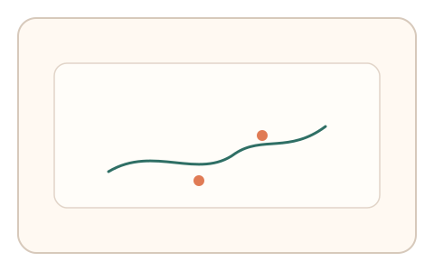
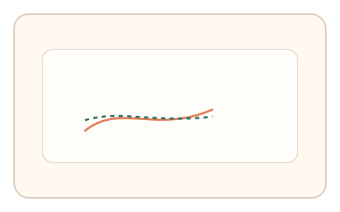
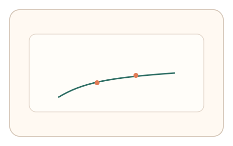

#167
Reverse Brainstorming - Round 3
已扩展
主动扰动回馈
轨迹中插入扰动点并观察即时回馈曲线，判定基于纠偏时序与抖动谱。
概念原文
在轨迹中插入短促扰动点并观察即时回馈曲线，判定基于扰动‑纠偏的时序结构与微抖动谱。
预生成“对抗轨迹”难以预测扰动点，实时反馈成为关键门槛。
研究背景
主动扰动会引发即时纠偏，真实用户反馈呈稳定时序结构与微抖动谱。扰动点不可预测，可削弱预生成轨迹攻击。
核心机制
- 在轨迹中随机插入扰动点。
- 记录扰动后的回拉与时延。
- 提取微抖动频谱与纠偏幅度。
- 与人类基线分布比对。
用户流程
- 步骤 1：用户进行连续轨迹操作。
- 步骤 2：系统插入短促扰动。
- 步骤 3：系统分析回馈曲线并判定。
判定信号
扰动后纠偏时延
真实反馈存在可测延迟。
微抖动频谱
生理噪声体现真实操控。
判定逻辑
纠偏时延与抖动谱需匹配人类区间；瞬时回弹或过度平滑判异常。
对抗面
- 脚本预测扰动并预补偿
- 回放固定纠偏轨迹
防御与缓解
- 扰动位置与幅度随机化
- 多次扰动叠加检测
- 结合反应时与路径信号
可达性与风险
提供低强度扰动与慢速模式。
- 扰动过强影响任务完成
- 触控设备噪声干扰
可视化状态

状态 1：扰动插入
轨迹中出现扰动点。

状态 2：即时纠偏
记录回拉与修正。

状态 3：频谱判定
分析抖动谱与时延。
参考资料
Closed-loop control
说明扰动与反馈机制。
Motor control
说明纠偏与运动控制。